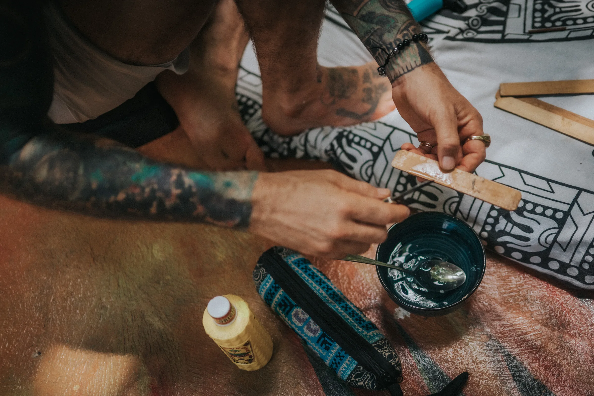

Sacred Offerings
Bufo, Kambo, Psilocybin, and Rapéh — ancient allies, each with its own spirit and purpose, held with the care they ask for. Healing that reaches the spiritual, the mental, and the physical.
The Medicines
These are the medicines we work with. Each one is a living ally with its own spirit, purpose, and wisdom — carried for centuries by the people who knew them first, and held here with the reverence they ask for.
 Medicine of the Gods
Medicine of the Gods
Sacred Medicine
A powerful sacred medicine known for its profound healing benefits — deep emotional release, spiritual awakening, and a felt connection to the divine.
Its journey is short and total — minutes, not hours — dissolving the line between self and everything else. What it asks for is surrender, and what it leaves behind is often a life seen clearly for the first time.
Learn more about Bufo → The Frog
The Frog
Sacred Medicine
An ancient Amazonian medicine used to cleanse the body, mind, and spirit — promoting deep detoxification and spiritual renewal.
The medicine of warriors and hunters, carried by the Matsés, Katukina, and Yawanawá peoples. It works through the body first — a purge that clears what has been held — and builds courage and discipline in its wake.
Learn more about Kambo → Sacred Mushrooms
Sacred Mushrooms
Sacred Medicine
The sacred mushrooms — slower, gentler work than the other allies. Emotional insight, forgiveness, and a softer view of old wounds.
Where Bufo is short and total, psilocybin takes its time. It opens room to feel what has been carried, and to meet it with compassion rather than fear.
Learn more about Psilocybin → Grounding
Grounding
Sacred Medicine
A sacred Amazonian snuff — known for its grounding, clearing, and centering effects, woven into ceremonial practice as a tool for deep presence and prayer.
Non-psychedelic, and still profoundly moving. It quiets mental chatter, clears the energetic field, and brings awareness back into the body — often used to prepare for deeper work with the other medicines.
Learn more about Rapéh →Begin
If one of these medicines is calling you, reach out and we'll help you find the one that fits. Every path begins with a simple health screening — your safety and readiness are honored every step of the way.